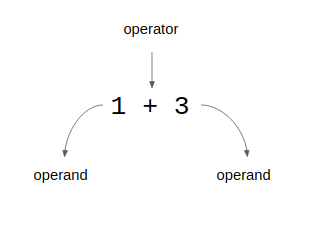

Home Lesson-1.3
Lesson-1.2
Lesson-1.2OperatorsArithmeticRelationalLogicalConventionExpressionsType of ExpressionsArithmetic ExpressionsBoolean Expressions
Operators
Arithmetic
The anatomy of an operation is given below:

The following table gives the symbols for arithmetic operators and the operations that they correspond to:
| Operator | Operation |
|---|---|
| + | Addition |
| - | Subtraction |
| * | Multiplication |
| / | Division |
| // | Floor division |
| % | Modulus |
| ** | Exponentiation |
All the operators in the above table are binary, i.e., they operate on two operands. Let us now take a look at each operator:
xxxxxxxxxx141>>> 10 + 52153>>> 10 - 5455>>> 10 * 56507>>> 10 / 582.09>>> 10 // 510211>>> 10 % 512013>>> 10 ** 514100000The last three operators might be new. In more familiar terms, these are the mathematical operations that they correspond to:
//is called the floor division operator.x // ygives the quotient whenxis divided byy. For example,8 // 3is2.%is called the modulus operator.x % ygives the remainder whenxis divided byy. For example,10 % 3is1.**is called the exponentiation operator.x ** yreturns .
/ and // are two different operators. / gives the complete result of division, while // returns the quotient. For example, 5 / 2 results in 2.5 while 5 // 2 gives 2. There are two more arithmetic operators of interest to us, unary plus and unary minus. These are the + and - signs. Unlike the operators that we have seen so far, these two are unary operators, i.e., they operate on one operand. For example:
xxxxxxxxxx41>>> - 22-23>>> + 242It is important to note that the symbols for plus and minus operators are the same as the ones for addition and subtraction. The context determines the nature of the operator:
xxxxxxxxxx31>>> - 1 # unary minus2-13>>> 1 - 1 # subtraction operatorSometimes both of them could come together in the same expression:
xxxxxxxxxx41>>> 1 - - 1 223>>> # The minus on the left is subtraction4>>> # The minus on the right is unary minusIn all the operations that we have seen so far, the operands have been literals. In general, the operands can also be variables:
xxxxxxxxxx41>>> x = 12>>> y = x * 53>>> print(x, y)41 5
Relational
The following table gives the symbols for relational operators and the operations that they correspond to:
| Operator | Operation |
|---|---|
| > | greater than |
| < | less than |
| >= | greater than or equal to |
| <= | less than or equal to |
| == | double equal to |
| != | not equal to |
All the operators in the above table are binary. Let us now take a look at each of them:
xxxxxxxxxx121>>> 10 > 52True3>>> 10 < 54False5>>> 10 >= 56True7>>> 10 <= 58False9>>> 10 == 510False11>>> 10 != 512TrueRelational operators are also called comparison operators. The result of any comparison operation is a boolean value: True or False. The result of a comparison operation can be assigned to a variable:
xxxxxxxxxx51>>> x = 102>>> y = 153>>> z = y > x4>>> print(z)5TrueThe == symbol corresponds to the equality operator and should not be confused with =, the assignment operator.
Logical
The following table gives the logical operators and the operations that they correspond to:
| Operator | Operation |
|---|---|
| not | negation |
| and | logical conjunction |
| or | logical disjunction |
and and or are binary operators; not is a unary operator. Let us now take a look at each of them:
xxxxxxxxxx81>>> True and False2False3>>> True or False4True5>>> x = False6>>> y = not x7>>> print(y)8TrueThe use of parenthesis after not is optional. For example:
xxxxxxxxxx61>>> x = True2>>> not x3False4>>> x = False5>>> not(x)6True
Convention
Consider the following lines of code:
xxxxxxxxxx41>>> print(1 + 2)233>>> print(1+2)43Both lines 1 and 3 give the same output. Line-1 has a space before and after the + operator, while line-3 doesn't. Both ways are syntactically correct. In this course, we will be following the first convention: there is always a space separating the operator from the operands. This is also true for the = operator.
xxxxxxxxxx31>>> x = 2 # We will follow this2>>> x=2 # We will NOT follow this3# But both conventions are valid
Expressions
An expression is some combination of literals, variables and operators. For example, the following are expressions:
1 + 4 / 4 ** 0x / y + z * 2.03 > 4 and 1 < 10not True and False
Each expression evaluates to some value. This value has a type. In the above examples, the first two expressions result in a float, while the next two expressions result in a bool. In the next few sections, we shall study two types of expressions:
- Arithmetic: an expression whose type is either
intorfloat - Boolean: an expression whose type is
bool
Type of Expressions
Arithmetic Expressions
Let us now look at the type of simple arithmetic operations. In mathematics, the result of adding two integers is another integer. Is this true in the case of Python? First, let us execute the following statement in the interpreter and see what we get:
xxxxxxxxxx21>>> 1 + 223The way to check the type of this expression is to use the type() function. For example, we have:
xxxxxxxxxx41>>> 1 + 2233>>> type(1 + 2)4<class 'int'>So far the interpreter's behaviour conforms to our intuition. Let us now change this code slightly:
xxxxxxxxxx41>>> 1.0 + 223.03>>> type(1.0 + 2)4<class 'float'>We see that the result is 3.0 which is of type float. The conclusion is that float is more dominant than int as far as the addition operation is concerned. What about other operations? Let us check with the help of the following examples:
xxxxxxxxxx101>>> type(7.0 * 5)2<class 'float'>3>>> type(7.0 / 5)4<class 'float'>5>>> type(7.0 // 5)6<class 'float'>7>>> type(7.0 ** 5)8<class 'float'>9>>> type(7.0 % 5)10<class 'float'>All the operations result in a float. From this we see that float is more dominant than int, irrespective of the operator involved.
Boolean Expressions
Expressions that involve a relational operator will result in a bool. For example:
xxxxxxxxxx41>>> 2 > 12True3>>> type(2 > 1)4<class 'bool'>Expressions that involve logical operators will naturally result in a bool. For example:
xxxxxxxxxx41>>> True and False2False3>>> type(True and False)4<class 'bool'>One way to analyze the outcome of boolean expressions that involve variables is to exhaustively list down the different combinations of values that variables can take and evaluate the expression for each such combination. For example, assume that X and Y are two boolean variables. Now, consider the following expression:
xxxxxxxxxx11>>> X or YWe can take the help of a concept called truth table to analyze the outcomes:
X | Y | X or Y |
|---|---|---|
True | True | True |
True | False | True |
False | True | True |
False | False | False |